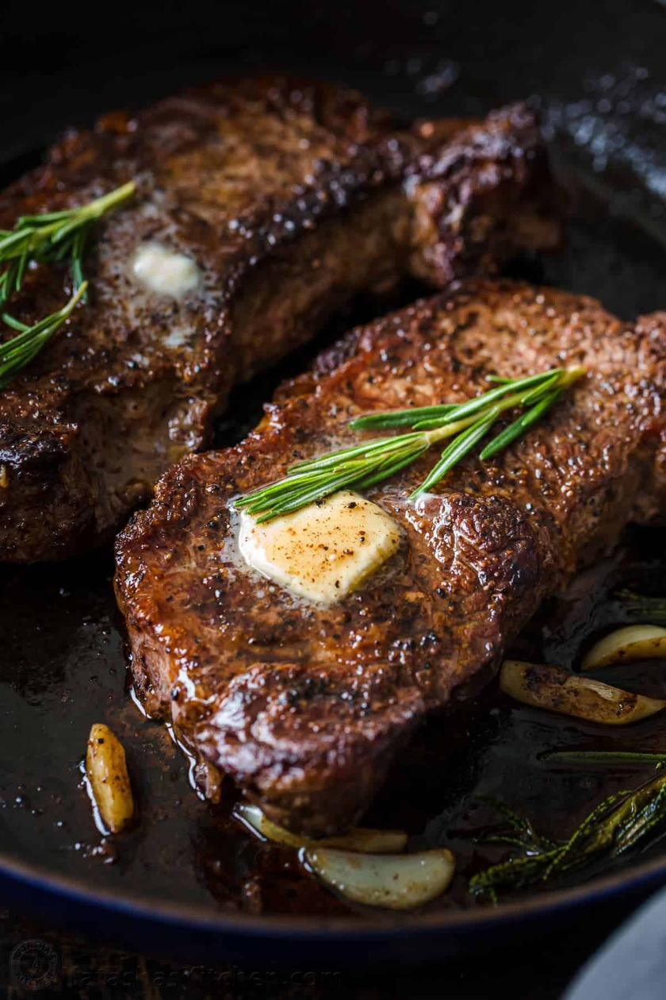

Pan Seared Steak Recipe

Description
Pan-Seared steaks have a buttery juicy taste that any
steak ethusiast would want to try. The recipe includes only
a small amount of ingredients. This recipe is very easy to make
and you will be able to make your own in no time.
Ingredients
- Salt
- Pepper
- 1 Pound New York Steak
- 1/2 Tbsp Oil
- Butter
- Quartered Garlic Cloves
- Roesmary Sprigs
Steps
- Use paper towels to pat the steaks
dry to get a perfect sear and reduce oil splatter
- Generously season both sides of the steak with Salt
and pepper
- Preheat the pan on medium and brush with oil.
Using just 1/2 Tbsp oil reduces splatter
- Add steaks and sear each side 3-4 minutes until
a brown crust has formed then use tongs to turn
steaks on their sides and sear edges
- Melt in butter with quartered garlic cloves and
rosemary sprigs. Tilt pan to spoon garlic butter
- Remove the steak and let it rest for 10 minutes